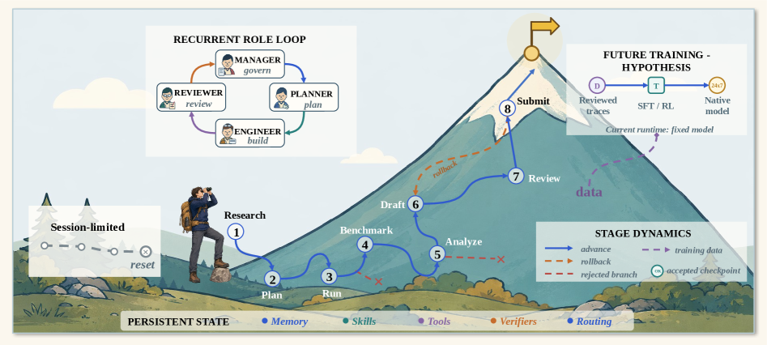
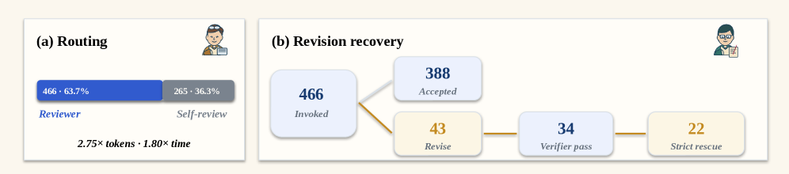

Argus: A General-Purpose Agentic Runtime for Long-Horizon Reasoning
Paper: "Argus: A General-Purpose Agentic Runtime for Long-Horizon Reasoning — Verification-Guided Persistence, Pivoting, and Runtime Self-Evolution" (arXiv 2608.05144, technical report, Aug 2026). 26 authors across Microsoft, SJTU, Fudan, Nanjing, Tsinghua, HKU, PKU, CUHK-Shenzhen, Donghua; co-first authors Boxiu Li, Zimo Wen, Yijia Fan; corresponding: Xian Zhang (Microsoft), Zhijie Deng (SJTU).
TL;DR
- Long-horizon agents must sometimes change the objective, not just the plan — but unrestricted pivoting is externally indistinguishable from rationalized failure. Argus makes pivots admissible only when evidence-backed, role-gated, and recorded: a Manager/Planner/Engineer/Reviewer loop runs bounded missions over durable campaign state, and candidate memories, skills, verifiers, routing updates, and rejected routes become reusable only after review. Model weights stay fixed; what evolves is the runtime state.
- SWE-Bench Pro (731 tasks, GPT-5.5 via Copilot): ~78% vs. ~59% Direct Copilot at 1.41× aggregate tokens. The gate works both ways: 43 Reviewer revision requests → 34 official-verifier recoveries and 22 strict rescues, and 35 tasks declared blocked rather than falsely complete. Mature waves use 21% fewer solve tokens and 15% less active time than startup — compounding without gradient updates, reported honestly as observational.
- Breadth as the argument: the same harness runs seven benchmark arenas (kernel optimization, nanochat/nanoGPT training, AARRI-Bench 76.8%, math-data synthesis gap 28.0), plus verticals — a math campaign retaining one falsified route and six proof-backed frontier updates, six autonomous paper pipelines (254 missions, 16 stage rollbacks), a scope-certified inference chip, and a materials campaign that simplified a published method after removing a confound.
Why this matters
Most agent frameworks fix the objective and optimize execution toward it, because allowing objective revision invites goal drift — the objective degrades toward whatever the executor can finish. Argus takes the opposite position: pivoting should be permitted and made safe by verification. The horizons that matter most (multi-day research, real software campaigns) are exactly those over which the initial objective is least likely to survive unchanged — a math campaign's normal output is bounds and counterexamples, not the theorem it set out for.
For this tracker's central interest — self-improving harnesses — Argus is the most fully-realized statement yet of fixed-model runtime self-evolution: the model never trains, but later missions start from a changed search policy because reviewed state (including certified dead ends) accumulated. It names the three failure conditions that make certified pivoting impossible in ordinary agents — continuity fails when transcripts get compacted away, acceptance fails when the worker certifies its own work, experience fails when only the final artifact survives so refuted routes can't be cited as evidence — and the whole architecture answers those three failures. The retained typed trajectories are explicitly positioned as future SFT/RL data — the runtime-learning-to-model-training pipeline this list keeps circling.
The core idea

Figure 2 from the paper: a session-limited agent ends in reset and reconstruction; Argus instead runs a recurrent Manager→Planner→Engineer⇄Reviewer loop across Manager-controlled stages, with reviewed memory, skills, tools, verifiers, and routing persisting below the loop — progress need not be monotone (orange rollback, red rejected branches).The working contract separates what must never drift from what evidence may refine:
where \(\iota\) is the standing user intent (immutable), \(o_t\) the current operational objective, \(c_t\) known constraints, and \(v_t\) verification criteria at mission \(t\); \(X_t\) tracks user-visible clarifications and open questions. A material refinement is only admitted through
taking the proposed contract \(K'_t\), evidence \(e_t\), the recorded review verdict \(r_t\), and the authorized operator/Manager decision \(u_t\) — i.e., a pivot needs evidence, an owner, and an audit trail, which is what makes it distinguishable from drift. Meanwhile self-evolution happens strictly in runtime state, not weights:
where \(\tau_t\) is the mission trajectory, \(E_t\) the admitted subset of its results, and \(U\) a partial update — many missions change nothing reusable. Review itself is modeled as selective error correction: with proposal base rate \(p=\Pr(C{=}1)\), Reviewer sensitivity \(\alpha=\Pr(A{=}1\mid C{=}1)\) and false-acceptance rate \(\beta=\Pr(A{=}1\mid C{=}0)\),
so as long as \(\alpha > \beta\), the accepted state stream is more precise than the proposal stream. A theory section adds a Blackwell-ordering argument for why process data beats final artifacts (the artifact is a projection of the typed trajectory), and why the runtime keeps both an append-only event tape and a bounded reviewed checkpoint (a typed compression under a context budget).
How it works
Four roles split authority across three planes (control / execution / records). Manager owns the objective, campaign stages, routing, and rollbacks; Planner decomposes state into bounded tasks (and owns stage checklists); Engineer modifies artifacts and runs experiments for one round; Reviewer independently inspects artifacts and issues done / continue / blocked. Completion sources are explicit: low-risk bounded work may use recorded Engineer self-review, but stage-closing or policy-required review cannot be waived, and completion never comes from filenames, token volume, or prose keywords. Stage transitions are constrained to hold / advance / rollback: \(g_{n+1}\in\{g_{n},\operatorname{next}(g_{n})\}\cup\operatorname{prev}(g_{n})\).
Continuity is deliberately unglamorous: Engineer and Reviewer get fresh provider sessions each round; cross-session state lives in a shared CHECKPOINT.md (durable state, evidence references, open questions, next step) that the Engineer updates and the Reviewer — when invoked — corrects and finalizes. The full history stays in the append-only typed event tape. Each state surface has an owner (memory/skills: Engineer produces, Reviewer commits; verification checklists: Planner; routing: Manager; task definitions: Planner-authored, scheduler-committed), so no component certifies its own work.
# Reviewed mission loop (Algorithm 1, condensed)
c ← ManagerCommit(ι, K_t) # persist campaign identity
while budget remains and c not complete:
q ← Planner(backlog, H_t, c, K_t) # claim ONE bounded task
repeat:
(y, e, d) ← Engineer(q, H_t) # artifacts y, measurements e
if d = skip and SelfReviewAllowed(q):
r ← EngineerSelfReview(q, y, e) # recorded as self-review
else:
r ← Reviewer(q, y, e) # fresh session, same artifacts
if r = continue: q ← r.next_action # revision loop
until r ∈ {done, blocked, paused}
τ_t ← trace projection; E_t ← AdmitResult(τ_t)
if evidence proposes material refinement K′_t:
obtain required authority u_t
(X_{t+1}, K_{t+1}) ← ManagerAdmit(X_t, K_t, K′_t, e_t, r_t, u_t)
H_{t+1} ← U(H_t, τ_t, E_t, K_{t+1}) # commit only reviewed updates:
# memory, skills, verifiers,
# routing, rejected routes
t ← t + 1
Results
Capability floor, seven arenas (GPT-5.5; Codex backend except SWE via Copilot): SWE-Bench Pro ~78% vs. ~59% Direct Copilot (1.41× tokens); SOL-ExecBench GPU kernels global #6 with two #1 kernels and 7 top-3; nanochat B200 0.9636 BPB (human best 0.9646) and H100 0.9855 (0.9879); nanoGPT speedrun 79.77 s vs. same-device human 80.18 s; AARRI-Bench 63/82 = 76.8% (paper best 68.3%); math-reasoning data synthesis pass@4−pass@1 gap 28.0 (Arbor 20.83, Claude 8.33, Codex 6.25). An in-progress MLE-Bench Lite campaign has closed nine Kaggle competitions with medals (3 gold / 3 silver / 3 bronze); an in-progress GLM-5.2-on-Claude-Code SWE run (70.94%) shows backbone/surface transfer. One artifact left the lab: an Argus-optimized TileLang RWKV6 kernel merged upstream into Flash Linear Attention (fla-org PR #1045).

Figure 3 from the paper: 466 of 731 tasks route to an independent Reviewer (2.75× solve tokens, 1.80× active time of self-reviewed tasks); of 43 revision requests, 34 later pass the official verifier and 22 complete the strict review loop, while 35 tasks are declared blocked instead of falsely complete.Knowing when to stop: 466/731 tasks (63.7%) invoke the Reviewer; 265 use self-review. The revision funnel (43 → 34 verifier recoveries = 79.1%, → 22 strict rescues) plus the 35 blocked verdicts are the paper's operational definition of a working gate: refusing to stop early and refusing to claim success are the same mechanism. Cost over time: mature waves W19–22 use 21% fewer solve input tokens and 15% less active time per task than startup W1–6; the trajectory is non-monotone (W13–18 hits −50% tokens but more time; W23–24 rebounds on hard tasks) and the authors say plainly that without a frozen-state replay this is observational, not causal.
Verticals: an Erdős–Gyárfás math campaign retains one falsified route and six proof-backed frontier updates, with ~56% of role tokens attributed to direct frontier/verification work; six paper pipelines (640 campaign-hours, 254 missions, 286 Reviewer revisions, 16 stage rollbacks) all reach submission completion, including one that pivots — via seven no-go rollbacks and a Manager-admitted contract change — from a failed positive method to a 4,500-row negative-results audit. The ACE-2 chip (a Qwen2.5-0.5B W4A8 accelerator; SKY130 mapped synthesis, 62,283 cells, 0.614 mm²) is certified with its exclusions enumerated by the same gate (no routed timing, no tapeout, no silicon). The materials campaign is the sharpest vignette: after removing an integrator/score confound in a published MOF-generation method (integrator alone +1.92, p=0.238; score +9.00, p=2.0e−9), plain best-of-K independent sampling beats the published Feynman–Kac steering at every matched budget — the admitted method is simpler than the one it replaces.
How it connects
- Long-Horizon Agents survey (this list): in the survey's Agent = π_θ ⊕ H co-evolution formalism, Argus is the pure harness-side extreme (θ frozen by construction) and supplies the missing rigor on the H side: typed state, ownership, and admission rules instead of "memory + tools." Its trajectories-to-SFT/RL section is exactly the survey's internalization arrow.
- LoopX (tracked item): the closest engineering cousin — 200+ hour runs with externalized Goal/Todo/Gate/Evidence control-plane state and bounded turns. Argus adds the adversarial Reviewer role, verification-gated admission, and the intent-vs-objective contract formalism; LoopX conversely is open-source, Argus ships no code.
- PRO-LONG programmatic memory (this list): PRO-LONG's "keep history accessible, not accessed" premise is Argus's Equation 12 made concrete — the append-only event tape (PRO-LONG's
logs.txt) versus the bounded reviewed checkpoint are the two ends of the typed-compression trade-off Argus formalizes. - Recursive Harness Self-Improvement (this list): RHI evolves the harness specification via the model; Argus keeps harness code and weights fixed and evolves runtime state under review. They're complementary layers of the same RSI stack — RHI-style spec rewrites would themselves be natural candidates for Argus's admission gate.
Critical take
Read this as a systems-position paper with unusually honest bookkeeping, not as a controlled study. The central empirical claims are all confounded in ways the authors themselves enumerate: Reviewer routing is adaptive (so the 2.75×-token routed population is a selected-harder workload), the wave-level efficiency gains have no frozen-state replay (so "self-evolution reduces cost" is consistent-with, not demonstrated), and the SWE comparison is whole-runtime-vs-baseline at 1.41× tokens — a different harness, not an ablated Argus. The theory sections (density integral \(\rho_I\), research value \(V_R\), reuse value \(G_L\)) are imported from the project website and function mostly as vocabulary — \(G_L\) is defined counterfactually but never measured counterfactually. The verifier-shaped-objective risk is real and they name it: the MOF numbers are scored by the same validator the selection optimizes against, on the same 989 crystals the score was designed on. What earns the paper credibility anyway is where it refuses to claim: 35 blocked tasks reported as blocked, a non-monotone efficiency curve shown rather than smoothed, a stale BLOCKED assurance snapshot disclosed, a chip certificate that publishes its own exclusions. For anyone building self-improving harnesses, the durable contributions are the design invariants — the worker never certifies its own work, rejected routes are first-class reusable state, pivots need evidence + authority + provenance — more than any single number.
If you remember three things
- Pivoting is made safe by verification, not forbidden: the contract \(K_t=(\iota,o_t,c_t,v_t)\) separates immutable intent from evidence-refinable objective/constraints/criteria, and ManagerAdmit requires evidence, an authorized owner, and an audit trail — that's what makes a pivot distinguishable from rationalized failure.
- Verification-gated fixed-model self-evolution: weights frozen, but reviewed memories, skills, verifiers, routing updates, and certified dead ends persist across bounded missions — yielding ~78% vs. 59% on SWE-Bench Pro and a mature-phase 21%-token / 15%-time reduction (observational).
- The admission discipline generalizes across seven arenas and four verticals down to a chip and a materials method, and its signature output is negative space: blocked verdicts, retained falsified routes, and certificates that enumerate their own exclusions.